Afficher le code
library(tidyverse)
library(stringi)
library(ade4)
library(ggplot2)
library(ggrepel)
library(cluster)
library(TraMineR)
library(WeightedCluster)
library(GGally)
library(factoextra)library(tidyverse)
library(stringi)
library(ade4)
library(ggplot2)
library(ggrepel)
library(cluster)
library(TraMineR)
library(WeightedCluster)
library(GGally)
library(factoextra)J’ai découvert R au deuxième semestre de l’année 2022-2023 à l’occasion du cours de « Visualisation des données à l’aide du logiciel R » de Baptiste Coulmont à l’ENS Paris-Saclay, ce qui équivaut à un niveau L3. En Master 1 Sociologie Quantitative et Démographie, l’année suivante, toutes les méthodes statistiques présentées en cours étaient illustrées sur R, afin que les étudiants gagnent en autonomie sur le logiciel. De plus, j’ai effectué un stage au CREST à partir du mois de janvier 2024, auprès de Léa Pessin, avec pour objectif d’actualiser un travail de recherche avec de nouvelles vagues de données et traduire, si le terme est bien choisi, le code de Stata vers R. Le mémoire constitue donc le premier travail en autonomie, d’envergure, en utilisant R, qui plus est avec mes propres données.
La collecte de données par questionnaire s’accompagne nécessairement d’un travail de nettoyage et de traitement important afin de prendre connaissance de la base de données et relever, d’un côté, les erreurs de saisie et, de l’autre, les situations sociales qui ne rentrent pas dans la catégorisation proposée, et cela même si une phase de test du questionnaire a été réalisée au début pour ajuster certaines questions.
Le bloc de code suivant permet de charger le jeu de données, que j’ai mis en accès public après suppression des données sensibles, de manière à ce que les librairies ne soient pas identifiables. J’en profite pour donner des noms à mes variables et filtrer sur ma population d’intérêt, c’est-à-dire les librairies généralistes (306/337).
doc_quest <- read.csv2(
"https://minio.lab.sspcloud.fr/juleslapeuf/donnees_librairies_reproductibles.csv",
fileEncoding = "UTF-8",
check.names = FALSE
)
donnees_preparees <- doc_quest %>%
rename(
sal_tpl = "Combien y a-t-il d’employés à temps plein ? (en chiffre)",
sal_tpa = "Combien y a-t-il d’employés à temps partiel ? (en chiffre)",
taille = "Quelle est la surface commerciale de votre librairie ? (en m²)",
ca = "Quel était le chiffre d’affaires de la librairie l’année dernière ? (en euro)",
type = "Votre librairie est-elle... ?",
une_fois = "Lesquels de ces outils utilisez-vous au moins 1 fois par semaine ?",
jamais = "Lesquels de ces outils n'avez-vous jamais utilisé au travail ?",
chiffre_pre = "Au moment où vous répondez à ce questionnaire, avez-vous en tête un chiffre précis de... ?",
inq_av = "Sur une échelle de 1 à 10, avant la pandémie, étiez-vous inquiet pour l’avenir de votre commerce ?",
inq_p = "Sur une échelle de 1 à 10, en plein cœur de la pandémie (avril 2020), étiez-vous inquiet pour l’avenir de votre commerce ?",
inq_ap = "Sur une échelle de 1 à 10, êtes-vous inquiet pour l’avenir de votre commerce ?",
inq_source = "Quelle est votre principale source d’inquiétude ?",
outils_inf = "Avez-vous recours plus souvent à des outils informatiques et/ou numériques depuis la fin de la pandémie ?",
logspe_panne = "Votre librairie pourrait-elle fonctionner comme d’habitude si votre logiciel spécialisé tombait en panne ?",
diff_eco = "Rencontrez-vous des difficultés économiques ?"
) %>%
select(2:16)
donnees_preparees <- donnees_preparees %>%
filter(type == "Généraliste")#Taille
donnees_preparees <- donnees_preparees %>%
mutate(taille_reco = as.numeric(sub("\\D*(\\d+).*", "\\1", taille)))La surface du magasin n’est pas difficile à recoder, car il suffit d’enlever les éventuels m2 qui s’étaient glissés pendant le remplissage. Le gros du travail réside dans les colonnes sal_tpl et sal_tpa, en particulier pour ne pas compter les gérant.es comme des salariés et pour compter les alternant.es et apprenti.es comme des salariés à temps partiel. Ainsi, les réponses obtenues ne sont pas que des valeurs numériques, mais j’essaye d’en assigner une dès qu’une information le permet. Par exemple, pour la réponse 0.85, j’assigne la valeur 0 à sal_tpl et la valeur +1 à sal_tpa, car je suppose qu’il s’agit d’une personne qui travaille 85% du temps.
unique(donnees_preparees$sal_tpl) [1] "6" "9" "2"
[4] "1" "3" ""
[7] "4" "8" "3 salariés + 1 gérante"
[10] "7" "10" "3 (dont 2 alternants)"
[13] "0" "26" "2 gérents non salaries"
[16] "5" "3,8" "1,5"
[19] "20" "11" "17"
[22] "1.5" "12" "2 et 2 co gérantes"
[25] "1 salariée à 35h." "1+1" "1 + gérante"
[28] "0.85" Parfois, les répondant.es ont laissé des cases vides pour sal_tpa, et dès lors que le reste du questionnaire était rempli, j’ai assigné la valeur 0, supposant que les répondant.es n’ayant aucun salarié à temps partiel font une équivalence entre laisser la case vide et indiquer 0.
unique(donnees_preparees$sal_tpa) [1] "" "1" "5"
[4] "0" "3" "2"
[7] "4" "10" "1 (fin d'année)"
[10] "0,5" "1 salarié à 30 h" "1 alternante"
[13] "1 + une apprentie"#SALARIES
donnees_preparees[1, 2] <- "0"
donnees_preparees[18, 2] <- "0"
donnees_preparees[21, 1] <- "1"
donnees_preparees[21, 2] <- "2"
donnees_preparees[40, 1] <- "0"
donnees_preparees[51, 2] <- "1"
donnees_preparees[54, 2] <- "0"
donnees_preparees[79, 1] <- "0"
donnees_preparees[83, 2] <- "0"
donnees_preparees[103, 2] <- "0"
donnees_preparees[132, 2] <- "0"
donnees_preparees[139, 2] <- "0"
donnees_preparees[162, 2] <- "0"
donnees_preparees[194, 2] <- "0"
donnees_preparees[226, 2] <- "0"
donnees_preparees[248, 2] <- "2"
donnees_preparees[272, 2] <- "1"
donnees_preparees[272, 1] <- "0"
donnees_preparees[300, 2] <- "0"
#Nombre de salariés à temps plein
donnees_preparees$sal_tpl_rec <- donnees_preparees$sal_tpl %>%
as.factor() %>%
fct_recode(
"1" = "1 + gérante",
"1" = "1 salariée à 35h.",
"1" = "1,5",
"1" = "1.5",
"1" = "1+1",
"2" = "2 et 2 co gérantes",
"0" = "2 gérents non salaries",
"3" = "3 salariés + 1 gérante",
"3" = "3,8"
) %>%
as.character() %>%
as.numeric()
#Nombre de salariés à temps partiel
donnees_preparees$sal_tpa_rec <- donnees_preparees$sal_tpa %>%
as.factor() %>%
fct_recode(
"1" = "0,5",
"1" = "1 (fin d'année)",
"2" = "1 + une apprentie",
"1" = "1 alternante",
"1" = "1 salarié à 30 h"
) %>%
as.character() %>%
as.numeric()
#Somme = Nombre total de salariés
donnees_preparees <- donnees_preparees %>%
mutate(nb_salaries = sal_tpl_rec + sal_tpa_rec)Pour le chiffre d’affaires, il est souvent affaire d’espaces entre les centaines, de symboles d’unité monétaire ou de commentaires pour indiquer l’intervalle de temps ou la rondeur du chiffre. J’assigne une valeur car j’ai obtenu l’information à l’oral d’un libraire qui ne voulait pas l’écrire dans le questionnaire. Une fois les règles appliquées, je vérifie à la main tous les recodages pour être certain de n’avoir fait aucune erreur.
donnees_preparees[304, 7] <- "200000"
#Chiffre d'affaires
donnees_preparees <- donnees_preparees %>%
mutate(
ca_brut = str_to_lower(str_trim(ca)),
ca_rec = case_when(
# Réponses non exploitables
ca_brut %in% c(
"", "0", "warf warf warf",
"etablissement moyen",
"je ne sais plus",
"1ere année",
"pas encore fait une année complète",
"entre 07/23 et 03/24 : 285 000",
"75000€ ttc (de aôut à décembre)"
) ~ NA_real_,
# Valeurs exprimées en millions
ca_brut %in% c("1,1") ~ 1100000,
ca_brut == "1,2 millions euros" ~ 1200000,
ca_brut == "1,3 m €" ~ 1300000,
ca_brut %in% c("2 m", "2 millions") ~ 2000000,
ca_brut == "environs 2 000 000 €" ~ 2000000,
# Valeurs exprimées en milliers
ca_brut == "160 k€" ~ 160000,
ca_brut == "1923k€" ~ 1923000,
ca_brut == "197k€" ~ 197000,
ca_brut == "870 k€" ~ 870000,
ca_brut == "555 k€ ttc" ~ 555000,
# Valeurs particulières
ca_brut == "65" ~ 65000,
ca_brut == "150" ~ 150000,
ca_brut == "270" ~ 270000,
ca_brut == "170.000.00" ~ 170000,
ca_brut == "pas encore de bilan comptable terminé mais 165 000" ~ 165000,
ca_brut == "environ 205 000 euros" ~ 205000,
ca_brut == "plus de 500 000 €" ~ 500000,
ca_brut == "superieur 4 millions" ~ 4000000,
# Valeurs avec des séparateurs de milliers
TRUE ~ {
x <- ca_brut
# Supprimer les espaces classiques et insécables
x <- str_remove_all(x, "[[:space:]\u00A0\u202F]")
# Supprimer les mentions textuelles et monétaires
x <- str_remove_all(
x,
regex("€|euros?|ttc|ht|prévi|\\(prévi\\)", ignore_case = TRUE)
)
# Supprimer les points utilisés comme séparateurs de milliers
x <- str_replace_all(x, "(?<=\\d)\\.(?=\\d{3}(\\D|$))", "")
# Convertir la virgule décimale en point
x <- str_replace(x, ",", ".")
# Extraire le nombre
suppressWarnings(as.numeric(str_extract(x, "[0-9]+\\.?[0-9]*")))
}
)
) %>%
select(-ca_brut)Enfin, les dernières variables sont faciles à recoder.
#Variables sur les pratiques numériques
donnees_preparees <- donnees_preparees %>%
mutate(logspec = case_when(
str_detect(une_fois, "Logiciel") ~ 1,
str_detect(jamais, "Logiciel") ~ 0,
TRUE ~ 0
),
ressoc = case_when(
str_detect(une_fois, "Instagram") ~ 1,
str_detect(jamais, "Instagram") ~ 0,
TRUE ~ 0
),
ressocspe = case_when(
str_detect(une_fois, "Babelio") ~ 1,
str_detect(jamais, "Babelio") ~ 0,
TRUE ~ 0
),
bibnum = case_when(
str_detect(une_fois, "Electre") ~ 1,
str_detect(jamais, "Electre") ~ 0,
TRUE ~ 0
),
obslib = case_when(
str_detect(une_fois, "Verso") ~ 1,
str_detect(jamais, "Verso") ~ 0,
TRUE ~ 0
),
maillist = case_when(
str_detect(une_fois, "Mailing") ~ 1,
str_detect(jamais, "Mailing") ~ 0,
TRUE ~ 0
),
portasso = case_when(
str_detect(une_fois, "associatif") ~ 1,
str_detect(jamais, "associatif") ~ 0,
TRUE ~ 0
),
sitven = case_when(
str_detect(une_fois, "Propre") ~ 1,
str_detect(jamais, "Propre") ~ 0,
TRUE ~ 0
),
IA = case_when(
str_detect(une_fois, "artificielle") ~ 1,
str_detect(jamais, "artificielle") ~ 0,
TRUE ~ 0
),
gpdiscu = case_when(
str_detect(une_fois, "Discord") ~ 1,
str_detect(jamais, "Discord") ~ 0,
TRUE ~ 0
),
liseuse = case_when(
str_detect(une_fois, "Liseuse") ~ 1,
str_detect(jamais, "Liseuse") ~ 0,
TRUE ~ 0
),
etiq = case_when(
str_detect(une_fois, "queteuse") ~ 1,
str_detect(jamais, "queteuse") ~ 0,
TRUE ~ 0
))
#Variables sur les indicateurs comptables
donnees_preparees <- donnees_preparees %>%
mutate(taux_retour = case_when(
str_detect(chiffre_pre, "retour") ~ 1,
TRUE ~ 0
),
pass_cais = case_when(
str_detect(chiffre_pre, "passages") ~ 1,
TRUE ~ 0
),
ca_semaine = case_when(
str_detect(chiffre_pre, "chiffre") ~ 1,
TRUE ~ 0
),
remise = case_when(
str_detect(chiffre_pre, "pourcentage") ~ 1,
TRUE ~ 0
),
panier_moy = case_when(
str_detect(chiffre_pre, "panier") ~ 1,
TRUE ~ 0
),
age_stock = case_when(
str_detect(chiffre_pre, "âge") ~ 1,
TRUE ~ 0
),
taux_rotation = case_when(
str_detect(chiffre_pre, "rotation") ~ 1,
TRUE ~ 0
),
compte_banq = case_when(
str_detect(chiffre_pre, "somme") ~ 1,
TRUE ~ 0
),
renta_m2 = case_when(
str_detect(chiffre_pre, "rentabilité") ~ 1,
TRUE ~ 0
),
fonds_roule = case_when(
str_detect(chiffre_pre, "besoin") ~ 1,
TRUE ~ 0
)
)
donnees_preparees[142, 15] <- NA_character_ # Pour la colonne diff_eco
#Difficultés économiques éprouvées
donnees_preparees$diff_eco_rec <- donnees_preparees$diff_eco %>%
as.factor() %>%
fct_recode(
"1" = "Non",
"0" = "Oui"
) %>%
as.numeric()Après le recodage des variables, je réalise des catégorisations des variables suivantes : ca, nb_salaries, taille.
###CATEGORISATION
#CA
donnees_preparees <- donnees_preparees %>%
mutate(
ca_rec_rec = case_when(
ca_rec < 300000 ~ "Inférieur à 300k",
ca_rec < 600000 & ca_rec >= 300000 ~ "300k à 599k",
ca_rec < 1200000 & ca_rec >= 600000 ~ "600k à 1199k",
ca_rec >= 1200000 ~ "1,2 M€ et plus",
TRUE ~ NA_character_
),
ca_rec_rec = factor(ca_rec_rec)
) %>%
mutate(
ca_rec_rec = fct_relevel(
ca_rec_rec,
"Inférieur à 300k",
"300k à 599k",
"600k à 1199k",
"1,2 M€ et plus"
)
)
#SALARIES
donnees_preparees <- donnees_preparees %>%
mutate(
nb_salaries_ = case_when(
nb_salaries == 0 ~ "Aucun salarié",
nb_salaries >= 1 & nb_salaries <= 2 ~ "1 à 2 salariés",
nb_salaries >= 3 & nb_salaries <= 4 ~ "3 à 4 salariés",
nb_salaries >= 5 & nb_salaries <= 9 ~ "5 à 9 salariés",
nb_salaries >= 10 ~ "10 et plus",
TRUE ~ NA_character_
),
nb_salaries_ = factor(
nb_salaries_,
levels = c(
"Aucun salarié",
"1 à 2 salariés",
"3 à 4 salariés",
"5 à 9 salariés",
"10 et plus"
)
)
)
#TAILLE
donnees_preparees <- donnees_preparees %>%
mutate(surfco_ = case_when(
taille_reco > 199 ~ "Plus de 200 m2",
taille_reco <= 199 & taille_reco > 99 ~ "Entre 100 et 199 m2",
taille_reco < 100 ~ "Moins de 100 m2",
TRUE ~ NA_character_
),
surfco_ = fct_relevel(surfco_,
"Moins de 100 m2",
"Entre 100 et 199 m2",
"Plus de 200 m2"))Cette phase de recodage des variables avait produit quelques bêtises lors de mon master 1, si bien que 7 unités statistiques s’étaient perdues, alors qu’elles auraient dû être incluses dans la suite des analyses. Il était donc primordial de reprendre le code pour poser un regard critique, plus de 3 ans après, sur mon premier travail de recherche, et cela montre par la même occasion que mon regard s’est aiguisé tant dans la maîtrise des outils que dans la recherche d’une démarche plus honnête et rigoureuse. Néanmoins, le jeu de données ayant changé, il convient de conduire à nouveau les analyses pour voir si cela a pu avoir un réel effet sur les résultats présentés dans le mémoire.
d <- donnees_preparees %>%
select(
etiq, liseuse, gpdiscu, sitven, portasso,
maillist, obslib, bibnum, ressoc, ressocspe,
logspec, surfco_, nb_salaries_, ca_rec_rec,
taux_retour, pass_cais, ca_semaine, remise,
panier_moy, age_stock, taux_rotation,
compte_banq, renta_m2, fonds_roule
) %>%
mutate(across(-c(surfco_, nb_salaries_, ca_rec_rec), as.factor)) %>%
mutate(
surfco_ = ordered(surfco_, levels = c(
"Moins de 100 m2",
"Entre 100 et 199 m2",
"Plus de 200 m2"
)),
nb_salaries_ = ordered(nb_salaries_, levels = c(
"Aucun salarié",
"1 à 2 salariés",
"3 à 4 salariés",
"5 à 9 salariés",
"10 et plus"
)),
ca_rec_rec = ordered(ca_rec_rec, levels = c(
"Inférieur à 300k",
"300k à 599k",
"600k à 1199k",
"1,2 M€ et plus"
))
) %>%
na.omit()acm <- dudi.acm(df = d, scannf = FALSE, nf = 5)# Histogramme des valeurs propres
fviz_eig(acm,
barfill = "royalblue",
barcolor = "black",
linecolor = "red",
title = "Histogramme des valeurs propres",
ylab = "Pourcentage de la variance expliquée")
# Cercle de corrélations
s.corcircle(acm$co, 1, 2, clabel = 0.5)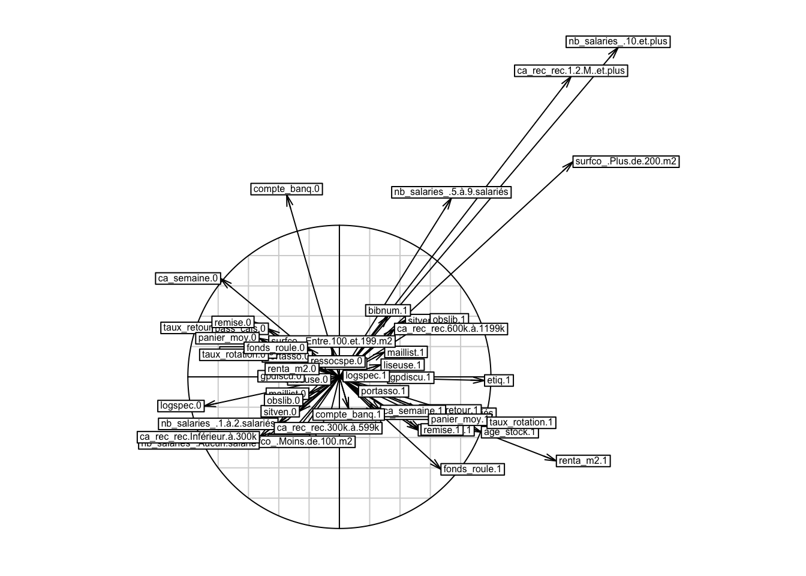
# Contributions des variables aux axes
fviz_contrib(acm,
choice = "var",
axes = 1,
fill = "royalblue",
color = "black",
title = "Histogramme des contributions à la dimension 1")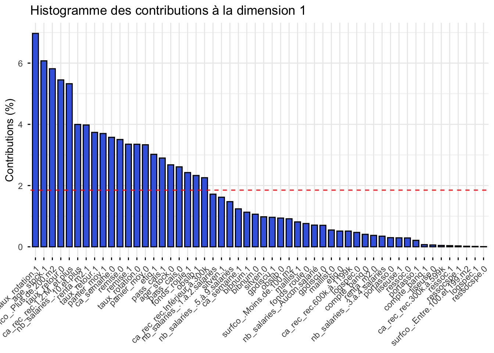
fviz_contrib(acm,
choice = "var",
axes = 2,
fill = "royalblue",
color = "black",
title = "Histogramme des contributions à la dimension 2")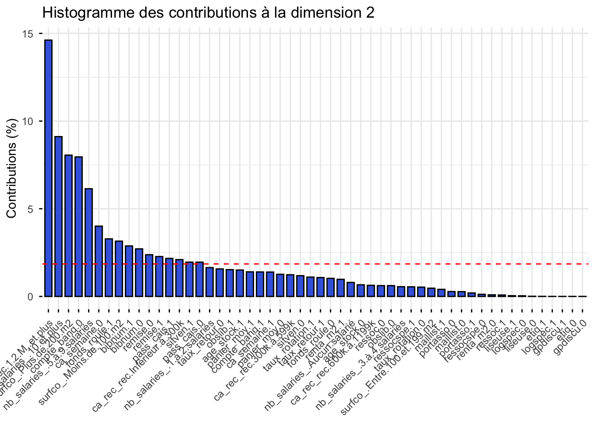
fviz_contrib(acm,
choice = "var",
axes = 3,
fill = "royalblue",
color = "black",
title = "Histogramme des contributions à la dimension 3")
modalites <- as.data.frame(acm$co)
modalites$modalite <- rownames(modalites)
# Projection des variables
ggplot(modalites, aes(x = Comp1, y = Comp2, label = modalite)) +
geom_point(size = 1.5) +
geom_text_repel(
size = 2.5,
box.padding = 0.3,
point.padding = 0.2,
max.overlaps = Inf
) +
geom_hline(yintercept = 0, linetype = "dashed", color = "grey70") +
geom_vline(xintercept = 0, linetype = "dashed", color = "grey70") +
labs(
title = "Nuage des modalités – ACM - Dimensions 1 et 2",
x = "Dimension 1",
y = "Dimension 2"
) +
theme_minimal()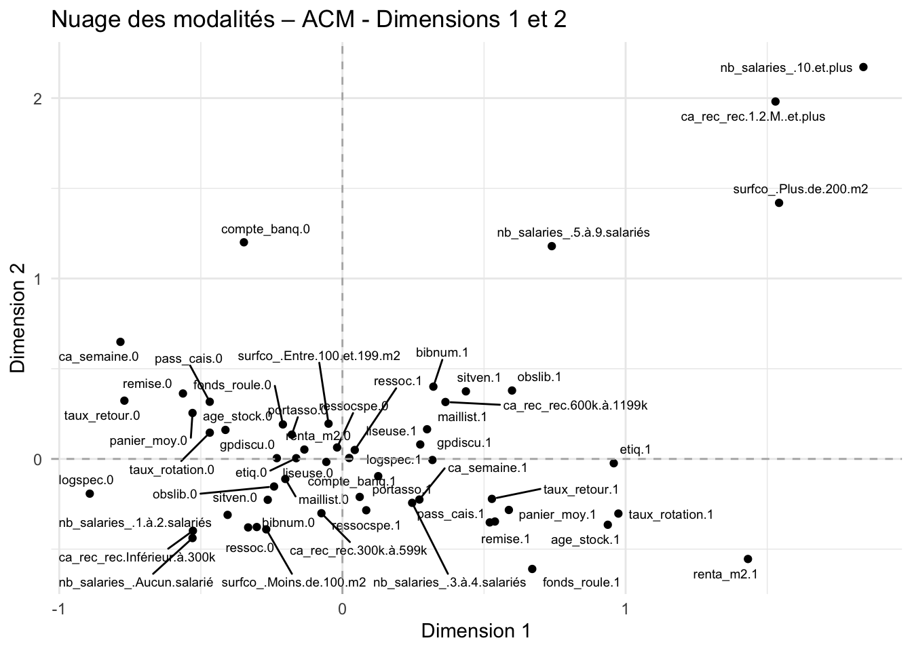
ggplot(modalites, aes(x = Comp1, y = Comp3, label = modalite)) +
geom_point(size = 1.5) +
geom_text_repel(
size = 2.5,
box.padding = 0.3,
point.padding = 0.2,
max.overlaps = Inf
) +
geom_hline(yintercept = 0, linetype = "dashed", color = "grey70") +
geom_vline(xintercept = 0, linetype = "dashed", color = "grey70") +
labs(
title = "Nuage des modalités – ACM - Dimensions 1 et 3",
x = "Dimension 1",
y = "Dimension 3"
) +
theme_minimal()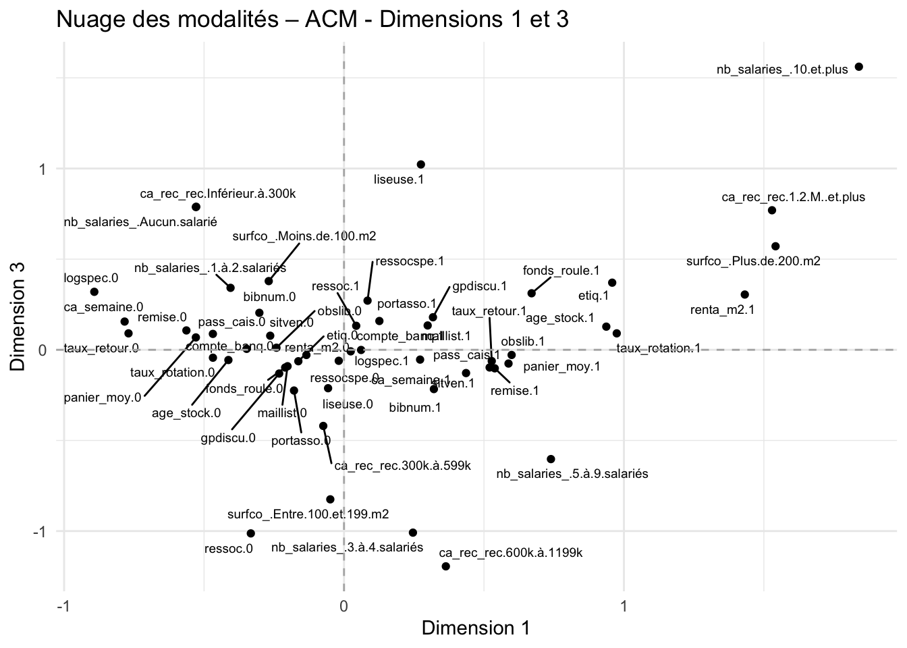
individus <- as.data.frame(acm$li)
individus$individu <- rownames(individus)
# Projection des individus
ggplot(individus, aes(x = Axis1, y = Axis2)) +
geom_point(size = 1.5, alpha = 0.6) +
geom_hline(yintercept = 0, linetype = "dashed", color = "grey70") +
geom_vline(xintercept = 0, linetype = "dashed", color = "grey70") +
labs(
title = "Nuage des individus – ACM - Dimensions 1 et 2",
x = "Dimension 1",
y = "Dimension 2"
) +
theme_minimal()
ggplot(individus, aes(x = Axis1, y = Axis3)) +
geom_point(size = 1.5, alpha = 0.6) +
geom_hline(yintercept = 0, linetype = "dashed", color = "grey70") +
geom_vline(xintercept = 0, linetype = "dashed", color = "grey70") +
labs(
title = "Nuage des individus – ACM - Dimensions 1 et 3",
x = "Dimension 1",
y = "Dimension 2"
) +
theme_minimal()
Dans cette sous-partie, je reprends l’analyse qui constitue le coeur du chapitre 5 et se fonde sur une CAH. Premier problème : dans le mémoire, j’écris que j’utilise “la méthode de Ward”, ce qui ne veut rien dire sans préciser ni la nature des variables ni la distance choisie. Deuxième problème : dans le code, je calcule la cah avec la distance euclidienne, mais la nature des variables, à savoir 21 binaires et 3 catégorielles, rend impossible son utilisation et la fonction bascule sur la distance de Gower, comme il était indiqué dans un Warning message.
Ainsi, je présente trois méthodes de classification différentes : - 1) distance phi2 et méthode de Ward au carré des distances (Ward.D2) - 2) distance de Gower et méthode average - 3) distance euclidienne et méthode Ward.D2
#########
## METHODE : PHI2
#########
distance_phi2 <- ade4::dist.dudi(acm)
arbre_phi2 <- hclust(
distance_phi2,
method = "ward.D2"
)
fviz_dend(
arbre_phi2,
k = 2,
rect = TRUE,
show_labels = FALSE
) +
ggtitle("CAH – Distance du Phi²")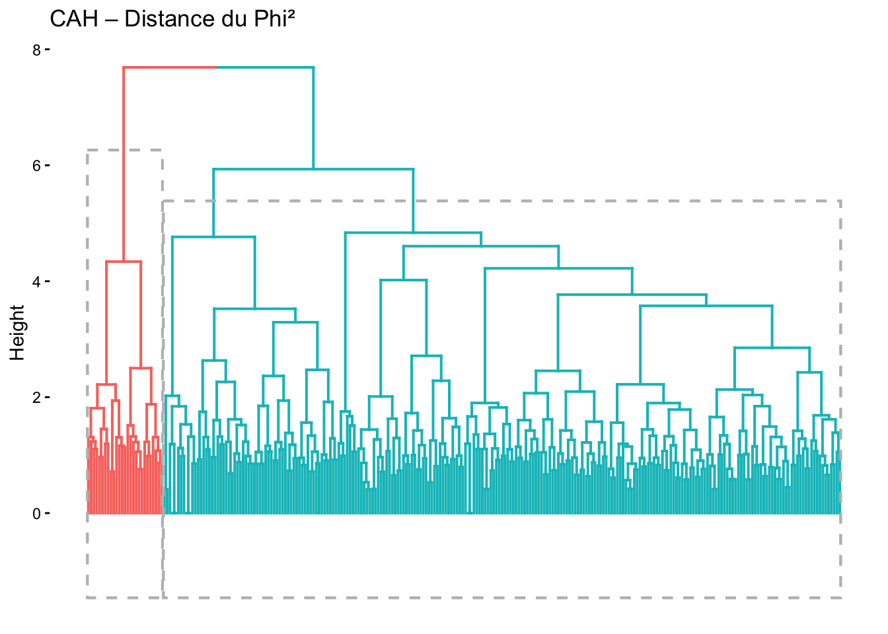
inertie_phi2 <- sort(arbre_phi2$height, decreasing = TRUE)
plot(inertie_phi2[1:20], type = "s", xlab = "Nombre de classes", ylab = "Inertie")
points(c(2, 3, 5), inertie_phi2[c(2, 3, 5)], col = c("green3", "red3", "blue3"), cex = 2, lwd = 3)
wardRange_phi2 <- as.clustrange(arbre_phi2, diss = distance_phi2, ncluster = 15)
plot(wardRange_phi2,
stat = c('ASW','CH','HC','HG','PBC'),
norm = "zscore",
main = "Indicateurs de découpage des classes du dendrogramme pour phi2")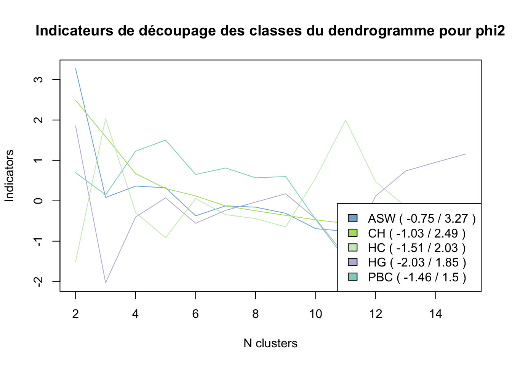
#########
## METHODE : GOWER
#########
distance_gower <- daisy(
d,
metric = "gower"
)
arbre_gower <- hclust(
as.dist(distance_gower),
method = "average"
)
fviz_dend(
arbre_gower,
k = 2,
rect = FALSE,
show_labels = FALSE
) +
ggtitle("CAH – Distance de Gower")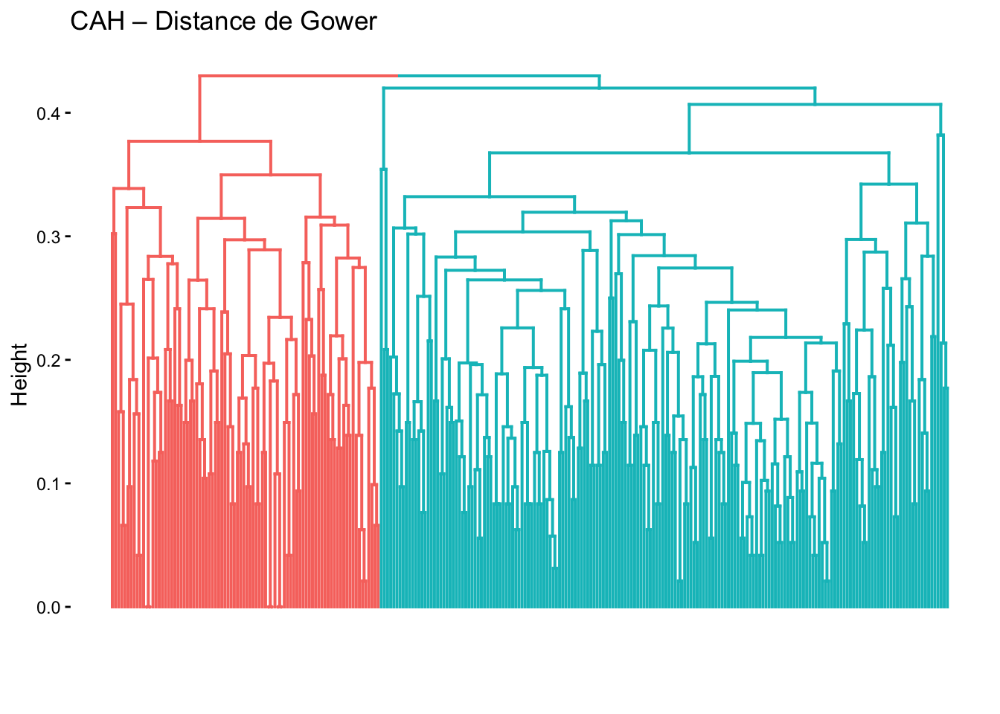
inertie_gower <- sort(arbre_gower$height, decreasing = TRUE)
plot(inertie_gower[1:20], type = "s", xlab = "Nombre de classes", ylab = "Inertie")
points(c(2, 3, 5), inertie_gower[c(2, 3, 5)], col = c("green3", "red3", "blue3"), cex = 2, lwd = 3)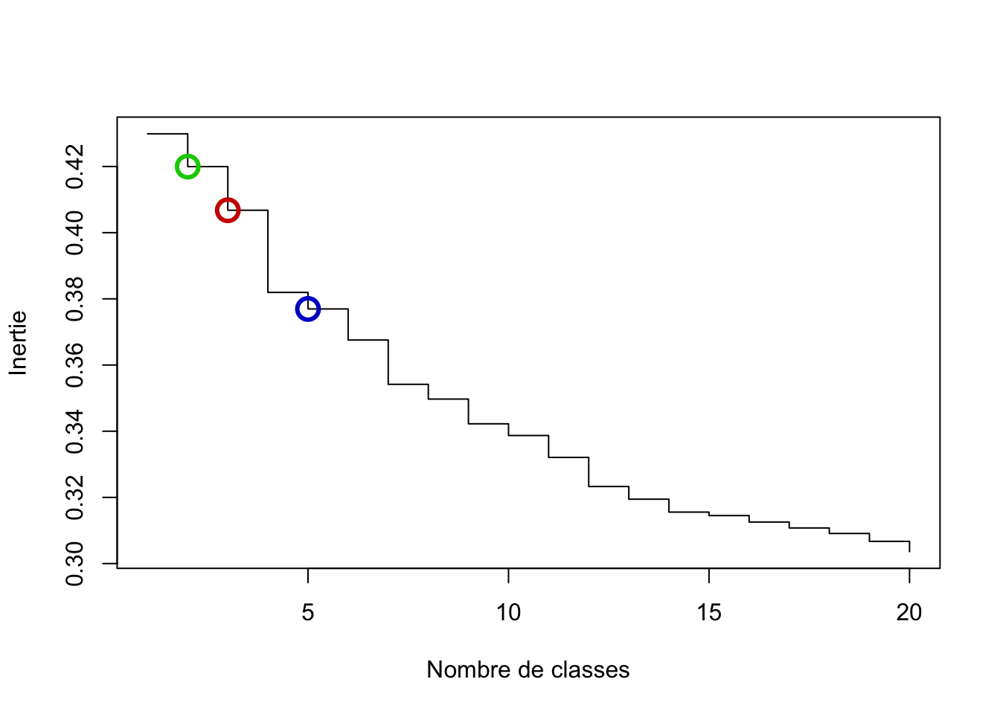
wardRange_gower <- as.clustrange(arbre_gower, diss = distance_gower, ncluster = 15)
plot(wardRange_gower,
stat = c('ASW','CH','HC','HG','PBC'),
norm = "zscore",
main = "Indicateurs de découpage des classes du dendrogramme pour Gower")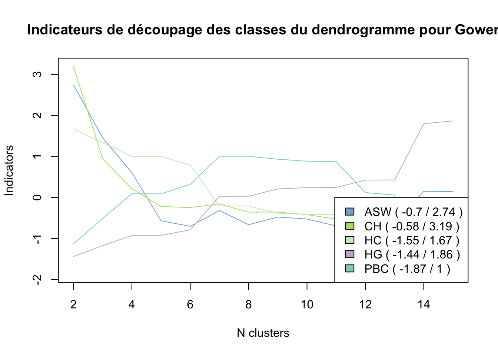
#########
## METHODE : EUCLIDEAN
#########
# Il faut utiliser des variables quantitatives, donc on reprend les variables avant catégorisation
d_euclidean <- donnees_preparees %>%
select(
etiq, liseuse, gpdiscu, sitven, portasso,
maillist, obslib, bibnum, ressoc, ressocspe,
logspec, taille_reco, nb_salaries, ca_rec,
taux_retour, pass_cais, ca_semaine, remise,
panier_moy, age_stock, taux_rotation,
compte_banq, renta_m2, fonds_roule
) %>%
mutate(
across(
c(etiq, liseuse, gpdiscu, sitven, portasso,
maillist, obslib, bibnum, ressoc, ressocspe,
logspec, taux_retour, pass_cais, ca_semaine,
remise, panier_moy, age_stock, taux_rotation,
compte_banq, renta_m2, fonds_roule),
~ as.numeric(as.character(.))
),
across(
c(taille_reco, nb_salaries, ca_rec),
as.numeric
)
) %>%
na.omit()
# Et on standardise
d_standardise <- as.data.frame(scale(d_euclidean))
distance_euclidean <- dist(
d_standardise,
method = "euclidean"
)
arbre_euclidean <- hclust(
distance_euclidean,
method = "ward.D2"
)
fviz_dend(
arbre_euclidean,
k = 3,
rect = FALSE,
show_labels = FALSE
) +
ggtitle("CAH – Distance Euclidienne")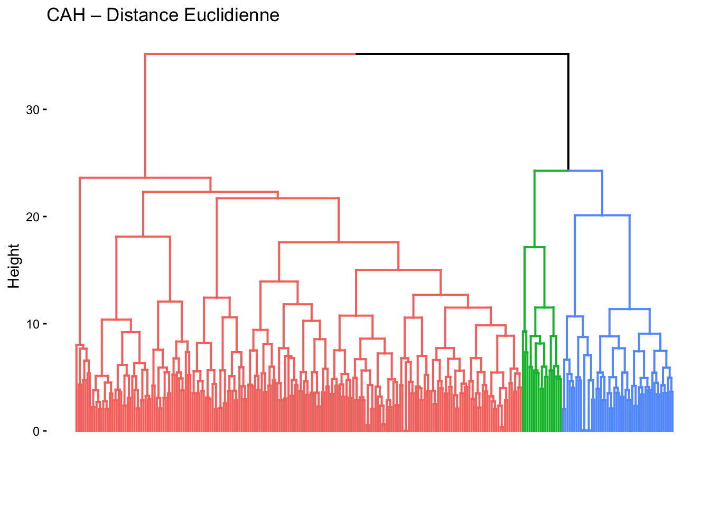
inertie_euclidean <- sort(arbre_euclidean$height, decreasing = TRUE)
plot(inertie_euclidean[1:20], type = "s", xlab = "Nombre de classes", ylab = "Inertie")
points(c(2, 3, 5), inertie_euclidean[c(2, 3, 5)], col = c("green3", "red3", "blue3"), cex = 2, lwd = 3)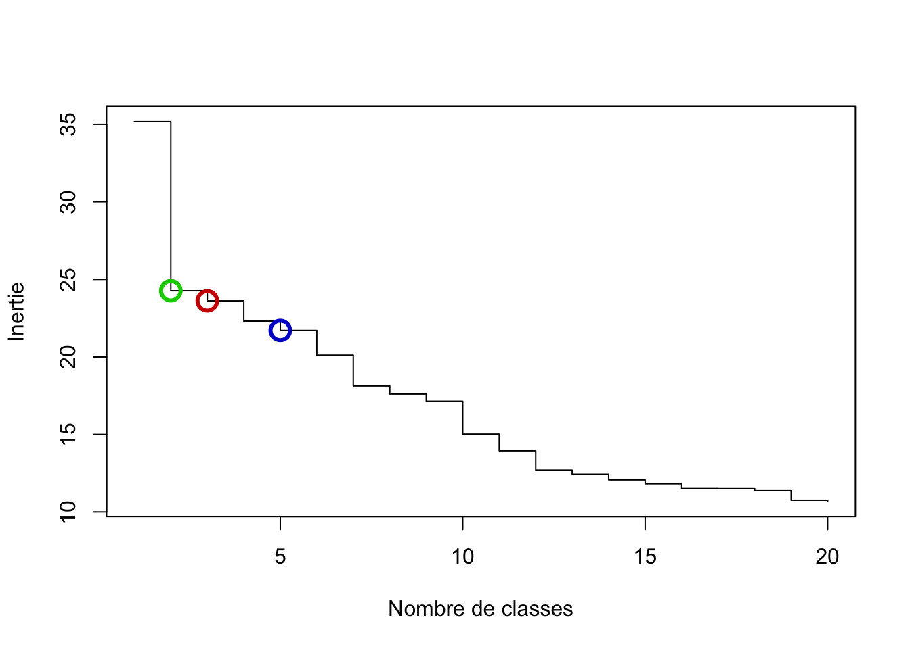
wardRange_euclidean <- as.clustrange(arbre_euclidean, diss = distance_euclidean, ncluster = 15)
plot(wardRange_euclidean,
stat = c('ASW','CH','HC','HG','PBC'),
norm = "zscore",
main = "Indicateurs de découpage des classes du dendrogramme pour Euclidienne")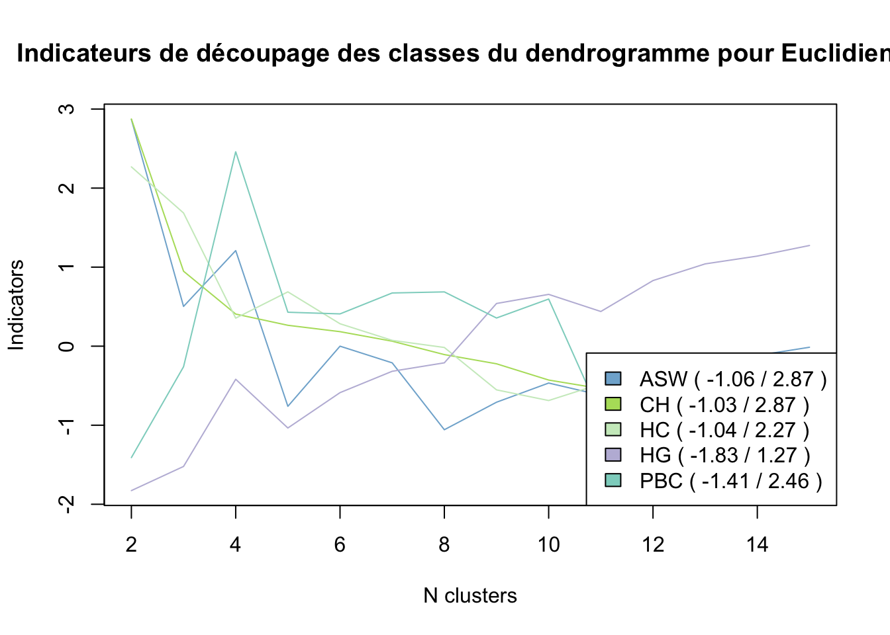
groupes_phi2_2 <- cutree(arbre_phi2, k = 2)
groupes_gower_2<- cutree(arbre_gower, k = 2)
groupes_euclidean_3 <- cutree(arbre_euclidean, k = 3)
individus$classe_phi2 <- factor(groupes_phi2_2)
individus$classe_gower <- factor(groupes_gower_2)
individus$classe_euclidean <- factor(groupes_euclidean_3)ggplot(individus, aes(x = Axis1, y = Axis2, color = classe_phi2)) +
geom_point(size = 1.8, alpha = 0.7) +
scale_color_manual(
values = c(
"1" = "red",
"2" = "blue"
)
) +
geom_hline(yintercept = 0, linetype = "dashed", color = "grey70") +
geom_vline(xintercept = 0, linetype = "dashed", color = "grey70") +
labs(
title = "Projection des classes – CAH phi²",
x = "Dimension 1",
y = "Dimension 2",
color = "Classe"
) +
theme_minimal()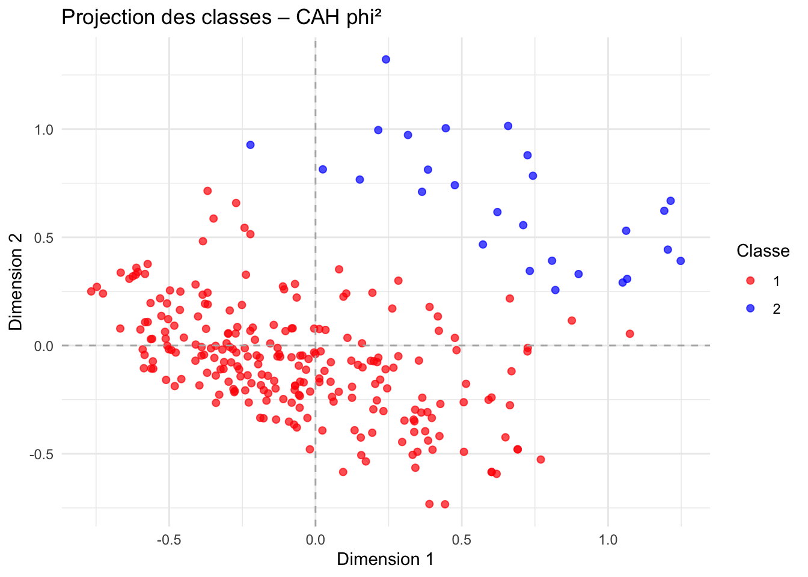
ggplot(individus, aes(x = Axis1, y = Axis2, color = classe_gower)) +
geom_point(size = 1.8, alpha = 0.7) +
scale_color_manual(
values = c(
"1" = "red",
"2" = "blue"
)
) +
geom_hline(yintercept = 0, linetype = "dashed", color = "grey70") +
geom_vline(xintercept = 0, linetype = "dashed", color = "grey70") +
labs(
title = "Projection des classes – CAH Gower",
x = "Dimension 1",
y = "Dimension 2",
color = "Classe"
) +
theme_minimal()
ggplot(individus, aes(x = Axis1, y = Axis2, color = classe_euclidean)) +
geom_point(size = 1.8, alpha = 0.7) +
scale_color_manual(
values = c(
"1" = "red",
"2" = "blue",
"3" = "green"
)
) +
geom_hline(yintercept = 0, linetype = "dashed", color = "grey70") +
geom_vline(xintercept = 0, linetype = "dashed", color = "grey70") +
labs(
title = "Projection des classes – CAH Euclidean",
x = "Dimension 1",
y = "Dimension 2",
color = "Classe"
) +
theme_minimal()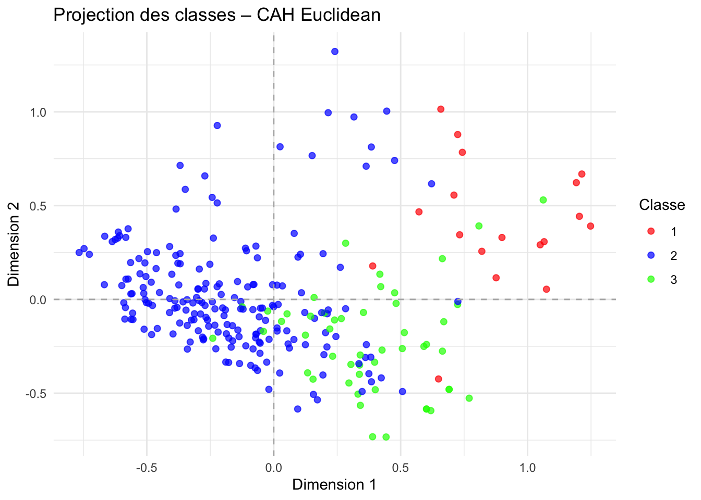
d1_phi2 <- d %>%
mutate(typo = factor(groupes_phi2_2))
d1_gower <- d %>%
mutate(typo = factor(groupes_gower_2))
d1_euclidean <- d_euclidean %>%
mutate(typo = factor(groupes_euclidean_3))
table(d1_phi2$typo)
1 2
241 27 table(d1_gower$typo)
1 2
86 182 table(d1_euclidean$typo)
1 2 3
18 200 50 ggtable(
d1_phi2,
columnsX = "typo",
columnsY = names(d1_phi2)[1:8],
cells = "col.prop",
fill = "std.resid") +
labs(fill = "Résidus standardisés du Chi²") +
theme(legend.position = "bottom")
ggtable(
d1_phi2,
columnsX = "typo",
columnsY = names(d1_phi2)[9:16],
cells = "col.prop",
fill = "std.resid") +
labs(fill = "Résidus standardisés du Chi²") +
theme(legend.position = "bottom")
ggtable(
d1_phi2,
columnsX = "typo",
columnsY = names(d1_phi2)[17:24],
cells = "col.prop",
fill = "std.resid") +
labs(fill = "Résidus standardisés du Chi²") +
theme(legend.position = "bottom")
ggtable(
d1_gower,
columnsX = "typo",
columnsY = names(d1_gower)[1:8],
cells = "col.prop",
fill = "std.resid") +
labs(fill = "Résidus standardisés du Chi²") +
theme(legend.position = "bottom")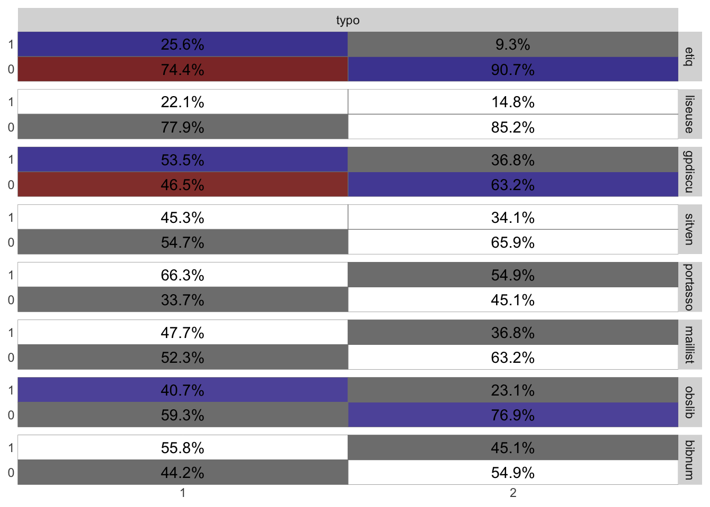
ggtable(
d1_gower,
columnsX = "typo",
columnsY = names(d1_gower)[9:16],
cells = "col.prop",
fill = "std.resid") +
labs(fill = "Résidus standardisés du Chi²") +
theme(legend.position = "bottom")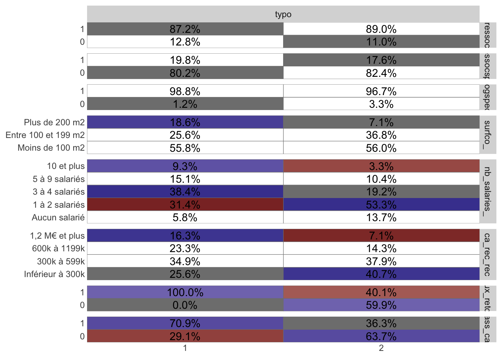
ggtable(
d1_gower,
columnsX = "typo",
columnsY = names(d1_gower)[17:24],
cells = "col.prop",
fill = "std.resid") +
labs(fill = "Résidus standardisés du Chi²") +
theme(legend.position = "bottom")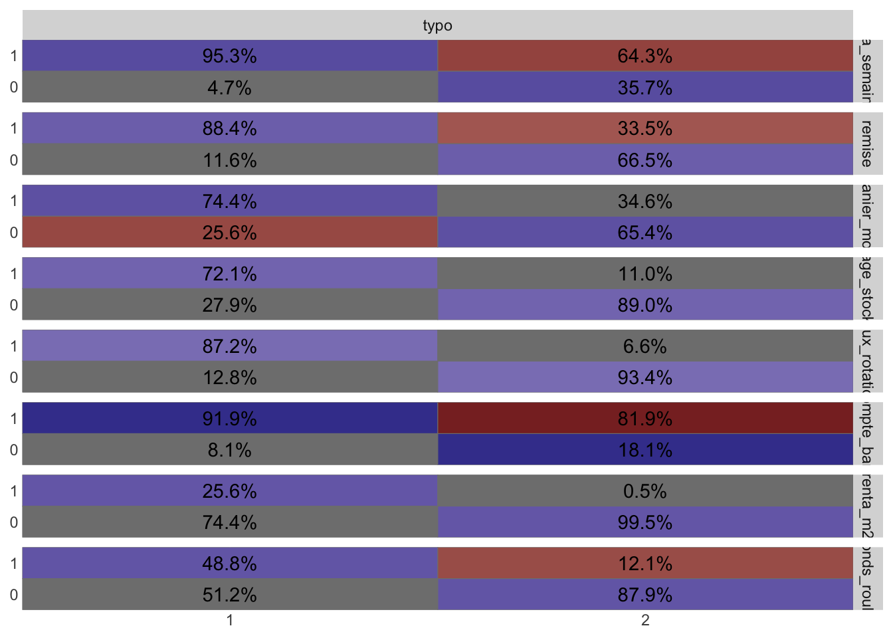
moyennes_euclidiennes <- d1_euclidean %>%
group_by(typo) %>%
summarise(
across(
where(is.numeric),
~ mean(.x, na.rm = TRUE)
),
.groups = "drop"
)
moyennes_euclidiennes# A tibble: 3 × 25
typo etiq liseuse gpdiscu sitven portasso maillist obslib bibnum ressoc
<fct> <dbl> <dbl> <dbl> <dbl> <dbl> <dbl> <dbl> <dbl> <dbl>
1 1 0.611 0.333 0.722 0.833 0.722 0.556 0.667 0.722 1
2 2 0.1 0.19 0.38 0.31 0.53 0.38 0.195 0.435 0.86
3 3 0.16 0.0400 0.48 0.48 0.76 0.44 0.52 0.6 0.94
# ℹ 15 more variables: ressocspe <dbl>, logspec <dbl>, taille_reco <dbl>,
# nb_salaries <dbl>, ca_rec <dbl>, taux_retour <dbl>, pass_cais <dbl>,
# ca_semaine <dbl>, remise <dbl>, panier_moy <dbl>, age_stock <dbl>,
# taux_rotation <dbl>, compte_banq <dbl>, renta_m2 <dbl>, fonds_roule <dbl>